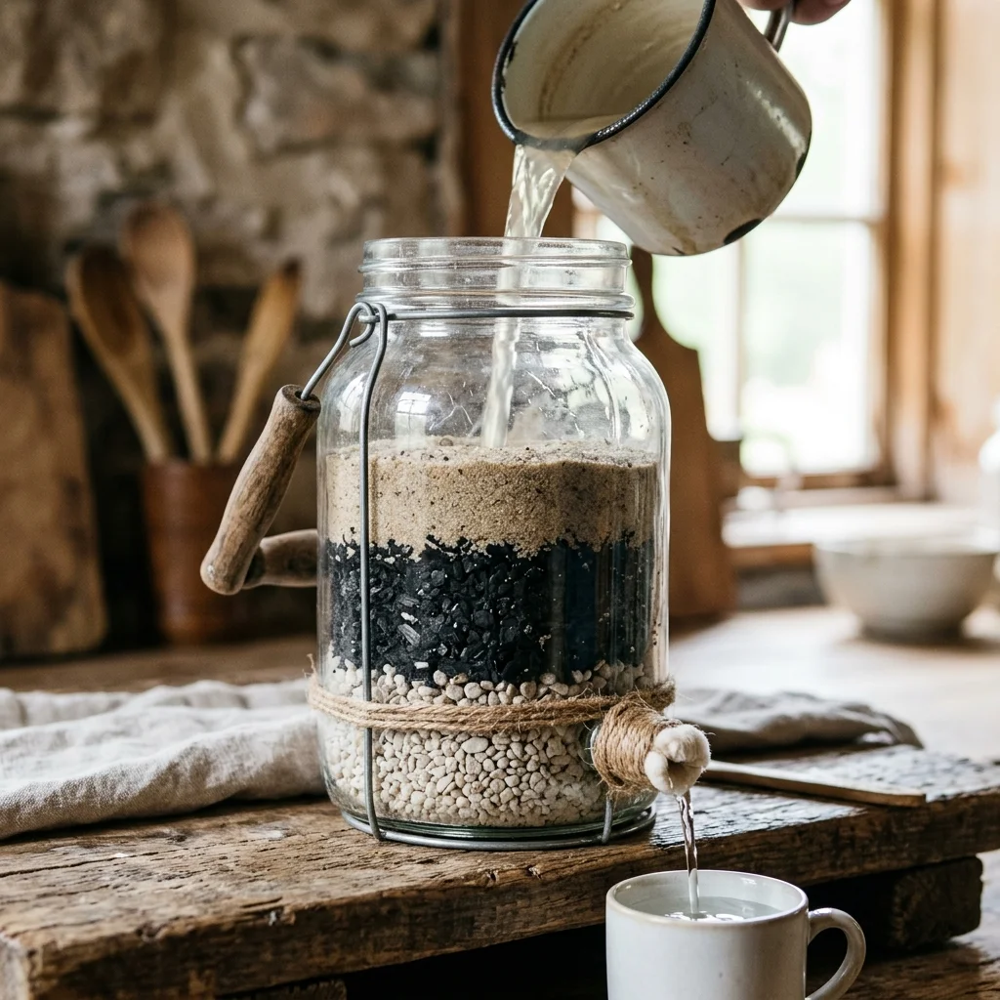
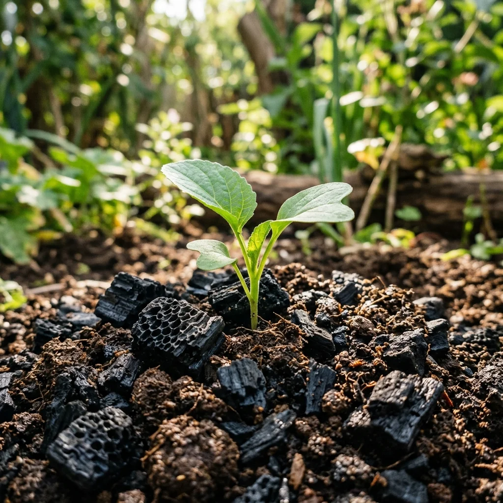
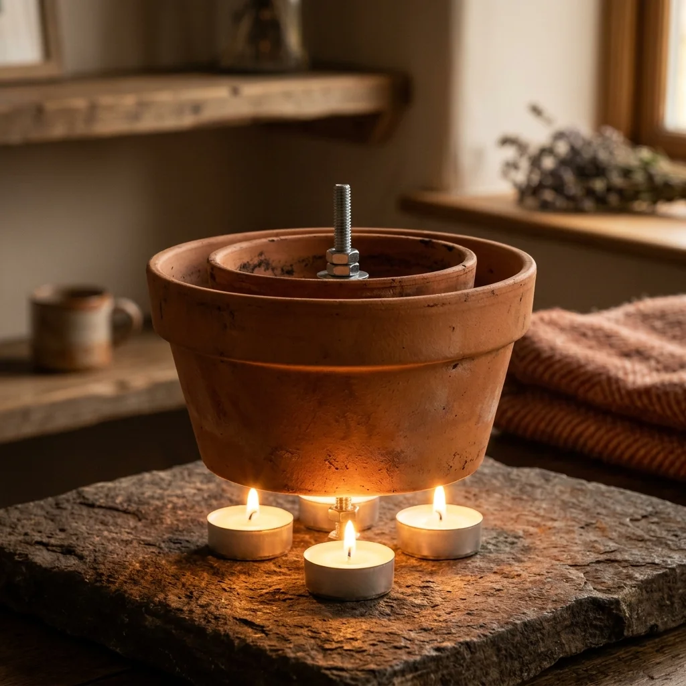

Chargement de la sagesse ancestrale...
Artículos Recomendados

Eau 29KFiltre à eau d'urgence au charbon et au sable
Construit un système de filtration mécanique, biologique et chimique pour purifier l'eau douce provenant de sources naturelles à l'aide de charbon actif, de sable fin et de gravier.

Eau 16KFiltre à biochar pour la purification des sols
Apprenez à produire du charbon pyrolysé (Biochar) pour filtrer les toxines, fixer le carbone et améliorer la fertilité des sols agricoles.

Chauffage 61,8KPots en argile et poêle à bougies
Apprenez à construire un système de chauffage radiant naturel à l'aide de pots en terre cuite et de petites bougies chauffe-plat. Chaleur écologique et économique sans électricité.
Comentarios y Experiencias